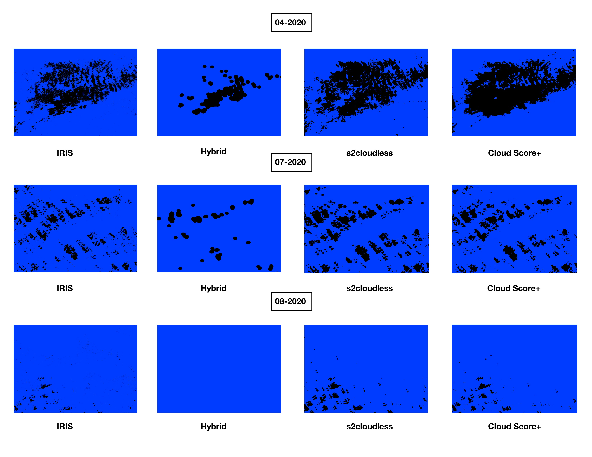
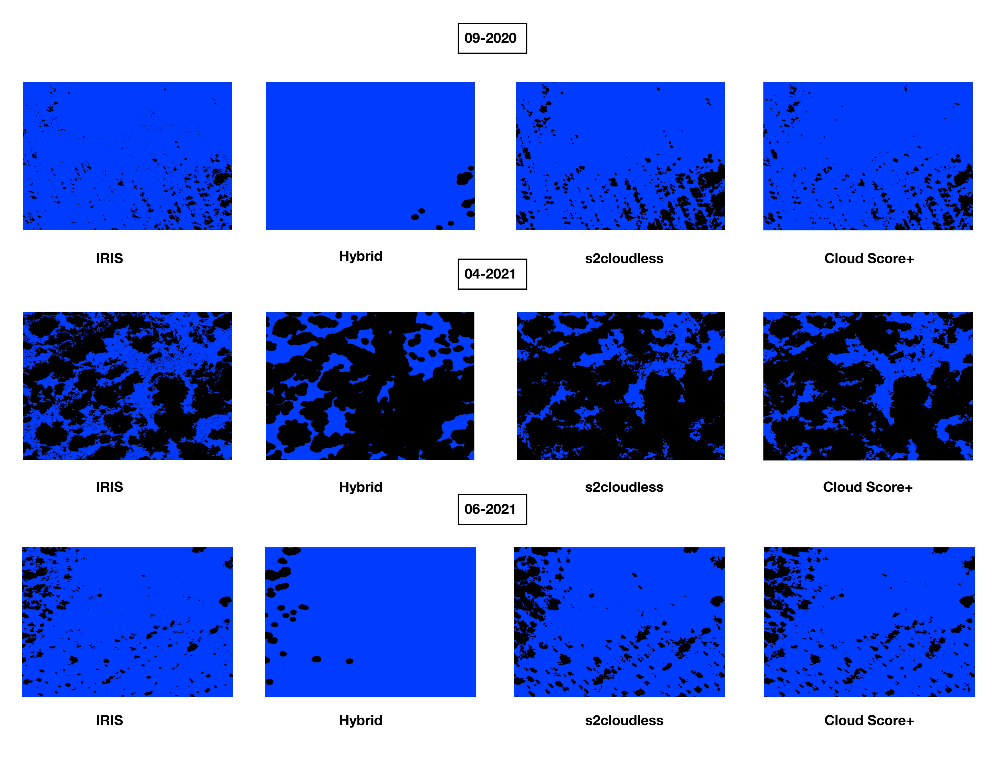
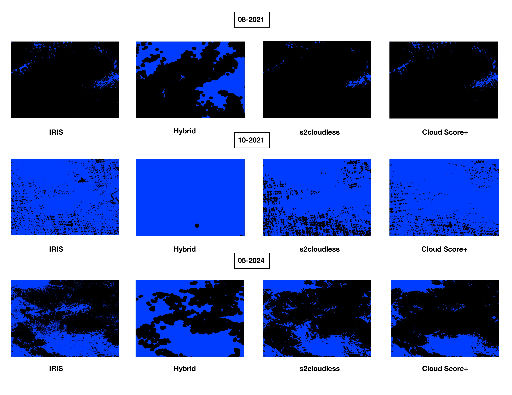
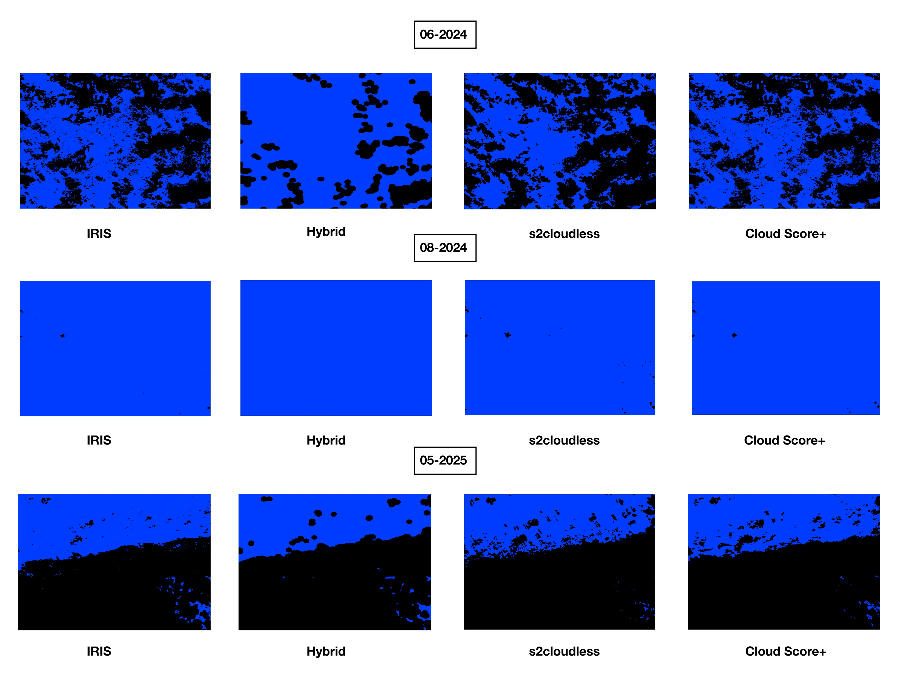
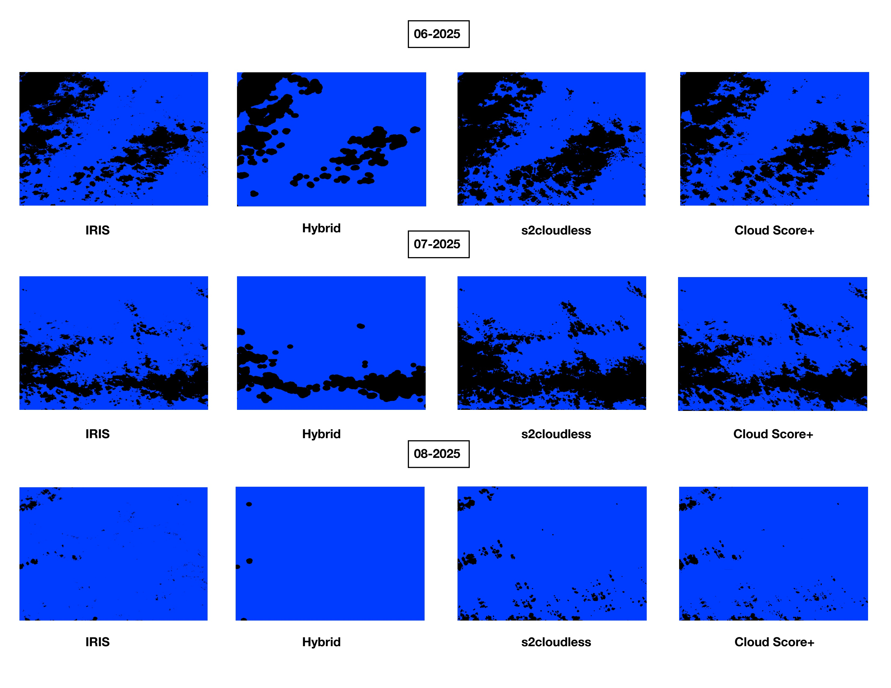

Hi, I'm Olivia.
I am a spatial and data analyst focused on using data visualization, GIS, and analytics to support environmental organizations working on renewable energy and climate mitigation. I enjoy turning complex datasets into clear stories that help teams make informed decisions for impact.
Projects
-
Examining the effect of cloud masking algorithms on remote sensing
data accuracy and processing to improve water quality in Sandusky Bay, Ohio
Cloud mask algorithm comparison analysis for water quality assessment using spatial data. View repository




Problem Statement
Cloud contamination is one of the largest sources of error in optical satellite imagery and can significantly impact environmental monitoring workflows. This project investigated which cloud masking algorithm provides the most accurate and reliable cloud detection for freshwater remote sensing applications in Sandusky Bay, Ohio, where satellite imagery is used to support harmful algal bloom and water-quality monitoring.Approach
I designed and implemented a comparative evaluation framework to assess three Sentinel-2 cloud masking algorithms:- a custom Hybrid (Sen2Cor-based) approach
- s2cloudless
- Cloud Score+
Key Findings
- Cloud Score+ achieved the highest overall performance across all primary evaluation metrics.
- Median bootstrapped MCC scores ranked algorithms as:
- Cloud Score+: 0.539
- s2cloudless: 0.402
- Hybrid: 0.323
- Statistical testing confirmed significant performance differences between algorithms (Friedman χ² = 22.93, p < 0.001).
- Cloud Score+ demonstrated the best balance between minimizing cloud contamination and preserving usable imagery.
- Error analysis revealed that the Hybrid approach frequently failed in low-cloud conditions, while s2cloudless tended to over-mask clear pixels.
Tools & Skills
Tools
- Google Earth Engine
- Python
- NumPy
- Pandas
- SciPy
- Scikit-learn
- QGIS
- ESA IRIS Annotation Tool
- Sentinel-2 Satellite Imagery
Skills
- Remote Sensing & Geospatial Analysis
- Environmental Data Science
- Statistical Hypothesis Testing
- Bootstrap Resampling
- Machine Learning Evaluation
- Image Classification
- Data Visualization
- Experimental Design
- Reproducible Research
Impact
This project provides an evidence-based comparison of widely used cloud masking approaches for freshwater remote sensing workflows. The results demonstrate that Cloud Score+ offers the most reliable cloud detection performance for water-quality monitoring applications, helping improve the quality of downstream environmental analyses and supporting more accurate monitoring of harmful algal bloom conditions. -
Climate Risk Dashboard
Interactive data visualization for climate indicators and trends. View demo / code
Contact
Connect with me on LinkedIn or explore more of my work on GitHub.